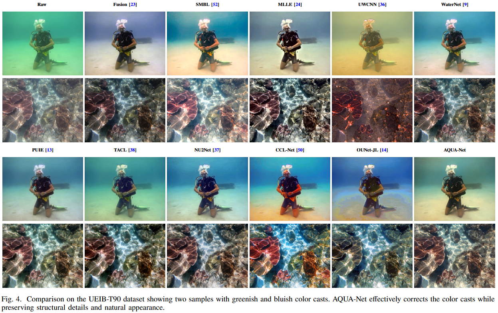

AQUA-Net: Adaptive Frequency Fusion and Illumination Aware Network for Underwater Image Enhancement
Munsif Ali1, Najmul Hassan2, Lucia Ventura1, Davide Di Bari1, Simonepietro Canese1, Jungpil Shin2
1 Stazione Zoologica Anton Dohrn, Villa Comunale, 80121 Napoli, Italy
2 School of Computer Science and Engineering, The University of Aizu, Aizuwakamatsu, Japan
Abstract
Underwater images often suffer from severe color distortion, low contrast, and a hazy appearance due to wavelength-dependent light absorption and scattering. Simultaneously, existing deep learning models exhibit high computational complexity and require a substantial number of parameters, which limits their practical deployment for real-time underwater applications
To address these challenges, this paper presents a novel underwater image enhancement model, called Adaptive Frequency Fusion and Illumination Aware Network (AQUA-Net). It integrates a hierarchical residual encoder–decoder with dual auxiliary branches, which operate in the frequency and illumination domains. The frequency fusion encoder enriches spatial representations with frequency cues from the Fourier domain and preserves fine textures and structural details. Inspired by Retinex, the illumination-aware decoder performs adaptive exposure correction through a learned illumination map that separates reflectance from lighting effects.
This joint spatial, frequency, and illumination design enables the model to effectively restore color balance, visual contrast, and perceptual realism under diverse underwater lighting conditions. Additionally, we present a high-resolution, real-world underwater video-derived dataset from the Mediterranean Sea, which captures challenging deep-sea conditions with realistic visual degradations to enable robust evaluation and development of deep learning models.
Extensive experiments on multiple benchmark datasets show that AQUA-Net performs on par with state-of-the-art methods in both qualitative and quantitative evaluations while using less number of parameters. Ablation studies further confirm that the frequency and illumination branches provide complementary contributions that improve visibility and color representation. Overall, the proposed model shows strong generalization capability and robustness, and it provides an effective solution for real-world underwater imaging applications.
Method
- - An illumination-aware enhancement branch is introduced to estimate a spatially adaptive illumination map that guides the decoder, which enables effective correction of non-uniform lighting and depth-dependent color attenuation.
- - A frequency-guided enhancement module is developed to operate in the Fourier domain, which recovers frequency textures and injects frequency-refined features into the encoder to improve edge sharpness and structural clarity.
- - A lightweight encoder–decoder architecture is constructed to fuse spatial, illumination, and frequency-domain cues through multi-scale residual modules and illumination-guided skip connections, providing robust enhancement across diverse underwater degradation conditions.
- - This work introduces the DeepSea dataset, a high-resolution underwater dataset that captures real deep-sea conditions with realistic visual degradations. It serves as a testbed for evaluating deep learning models for real underwater image analysis.
- - AQUA-Net’s performance is validated on multiple UIE benchmarks as well as on our own dataset through quality analyses and quantitative metrics. It shows comparable results to state-of-the-art (SOTA) approaches with less computational complexity.

Figure: AQUA-Net architecture combines a frequency enhancement block, an illumination branch, and a multi-level encoder–decoder backbone with Residual Enhancement Modules (REMs). The frequency block output fuses with the encoder input. Skip connections integrate illumination information to enhance feature refinement and restore underwater image quality.
Results
Image Enhancement

Video Demonstration
Materials

Citation
@article{ali2025aqua,
title={AQUA-Net: Adaptive Frequency Fusion and Illumination Aware Network for Underwater Image Enhancement},
authors={Munsif Ali and Najmul Hassan and Lucia Ventura and Davide Di Bari and Simonepietro Canese},
journal={ArXiv. https://arxiv.org/abs/2512.05960},
year={2025}
}
Contact
If you have any questions, feel free to contact: Simonepietro Canese or Munsif Ali – simonepietro.canese@szn.it or ali.munsif@szn.it